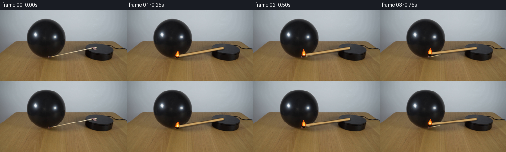
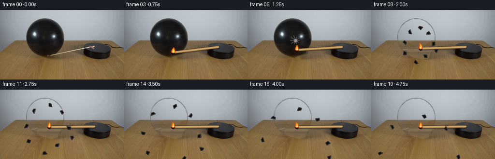
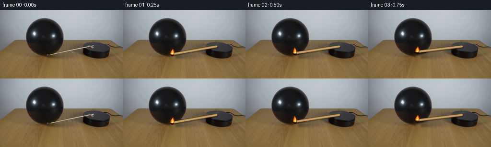

CODING AGENTS AS PIXEL WORLD MODELS
traex/GPT-5.6-Sol · 0113
点击播放 · 原生 RGB 像素
逐轮保存的候选
回放视频、检查图与代码变化。
每份候选均可单独播放。实际图片检查记录在下方工具轨迹中。
候选 01播放与检查图
点击播放 · 原生 RGB 像素

展开代码变化
--- 上一保存版本
+++ 本次保存版本
@@ -0,0 +1,225 @@
+from pathlib import Path
+import math
+import cv2
+import numpy as np
+from PIL import Image
+import artifact_io
+
+ROOT = Path(__file__).resolve().parent
+W, H = 256, 144
+rng = np.random.default_rng(113)
+
+src = np.asarray(Image.open(ROOT / "first_frame.png").convert("RGB"), dtype=np.uint8)
+assert src.shape == (H, W, 3)
+
+# ----------------------------------------------------------------------------
+# Masks inferred from the supplied photograph. They are deliberately soft so
+# revealed areas retain the camera's natural antialiasing and grain.
+# ----------------------------------------------------------------------------
+yy, xx = np.mgrid[0:H, 0:W]
+gray = cv2.cvtColor(src, cv2.COLOR_RGB2GRAY)
+roi = (xx >= 47) & (xx <= 139) & (yy >= 12) & (yy <= 104)
+dark = ((gray < 82) & roi).astype(np.uint8)
+dark = cv2.morphologyEx(dark, cv2.MORPH_CLOSE, np.ones((9, 9), np.uint8))
+num, labels, stats, _ = cv2.connectedComponentsWithStats(dark, 8)
+ball_component = 1 + int(np.argmax(stats[1:, cv2.CC_STAT_AREA]))
+ball_core = (labels == ball_component).astype(np.uint8)
+contours, _ = cv2.findContours(ball_core, cv2.RETR_EXTERNAL, cv2.CHAIN_APPROX_SIMPLE)
+hull = cv2.convexHull(max(contours, key=cv2.contourArea))
+ball_mask = np.zeros((H, W), np.uint8)
+cv2.fillConvexPoly(ball_mask, hull, 255)
+# Keep the inferred silhouette within the actual balloon's known extent.
+ball_mask[(xx < 51) | (xx > 135) | (yy < 15) | (yy > 100)] = 0
+ball_mask = cv2.GaussianBlur(ball_mask, (5, 5), 0.8)
+
+# Build a plausible photographic plate behind the balloon from clean pixels in
+# the same scan line. This preserves wall/table lighting and source sensor grain.
+clean = src.astype(np.float32).copy()
+object_exclusion = (ball_mask > 5)
+for y in range(H):
+ if y < 15 or y > 102:
+ continue
+ if y < 63:
+ valid = np.r_[np.arange(5, 48), np.arange(140, 244)]
+ else:
+ valid = np.r_[np.arange(3, 49), np.arange(138, 168), np.arange(234, 253)]
+ valid = valid[~object_exclusion[y, valid]]
+ if len(valid) < 10:
+ continue
+ # Robust quadratic illumination profile for each row.
+ for c in range(3):
+ vals = src[y, valid, c].astype(np.float32)
+ coef = np.polyfit(valid, vals, 2)
+ pred = np.polyval(coef, np.arange(W))
+ # add subdued, deterministic real source texture from adjacent pixels
+ residual = vals - np.polyval(coef, valid)
+ texture = np.interp(np.arange(W) % max(2, len(residual)),
+ np.arange(len(residual)), residual)
+ fill = pred + 0.28 * texture
+ m = object_exclusion[y]
+ clean[y, m, c] = fill[m]
+clean = np.clip(clean, 0, 255).astype(np.uint8)
+# Smooth only the synthesized interior and reintroduce subtle camera grain.
+softclean = cv2.GaussianBlur(clean, (0, 0), 0.65)
+interior = cv2.erode((ball_mask > 15).astype(np.uint8), np.ones((3,3),np.uint8)).astype(bool)
+clean[interior] = softclean[interior]
+noise = rng.normal(0, 0.65, clean.shape).astype(np.float32)
+clean = np.clip(clean.astype(np.float32) + noise * interior[..., None], 0, 255).astype(np.uint8)
+
+# Remove the original diagonal match from the live plate. Its measured center
+# line is y = 115.5 - .211x, x=101..198.
+old_match = np.zeros((H, W), np.uint8)
+cv2.line(old_match, (101, 94), (198, 74), 255, 7, cv2.LINE_AA)
+cv2.circle(old_match, (105, 94), 8, 255, -1, cv2.LINE_AA)
+# Avoid treating the black balloon as background. Bright match pixels over it
+# are covered by the newly drawn match until the pop.
+table_plate = cv2.inpaint(src, old_match, 4, cv2.INPAINT_TELEA)
+
+# Composite helpers -----------------------------------------------------------
+def alpha_over(base, overlay, alpha):
+ a = (alpha.astype(np.float32) / 255.0)[..., None]
+ return np.clip(base.astype(np.float32) * (1-a) + overlay.astype(np.float32) * a, 0, 255).astype(np.uint8)
+
+def line_layer(p0, p1, frame_i, hot=True):
+ """Antialiased, shaded wooden match and a compact physically-shaped flame."""
+ layer = np.zeros((H, W, 3), np.uint8)
+ a = np.zeros((H, W), np.uint8)
+ p0i = tuple(np.round(p0).astype(int)); p1i = tuple(np.round(p1).astype(int))
+ # soft contact shadow under the stick
+ cv2.line(layer, (p0i[0]+1,p0i[1]+2), (p1i[0]+1,p1i[1]+2), (24,19,14), 3, cv2.LINE_AA)
+ cv2.line(a, (p0i[0]+1,p0i[1]+2), (p1i[0]+1,p1i[1]+2), 72, 4, cv2.LINE_AA)
+ # warm wooden shaft, dark lower edge and pale specular ridge
+ cv2.line(layer, p0i, p1i, (129,91,48), 4, cv2.LINE_AA)
+ cv2.line(a, p0i, p1i, 255, 4, cv2.LINE_AA)
+ cv2.line(layer, p0i, p1i, (199,163,105), 2, cv2.LINE_AA)
+ cv2.line(a, p0i, p1i, 255, 2, cv2.LINE_AA)
+ # charred match head at the balloon-facing end
+ v = np.array(p1, float)-np.array(p0,float); v /= np.linalg.norm(v)
+ head = np.array(p1) + v*1.5
+ hc = tuple(np.round(head).astype(int))
+ cv2.circle(layer, hc, 3, (47,24,15), -1, cv2.LINE_AA)
+ cv2.circle(a, hc, 4, 245, -1, cv2.LINE_AA)
+ cv2.circle(layer, (hc[0]-1,hc[1]-1), 1, (104,48,22), -1, cv2.LINE_AA)
+ if hot:
+ # Flame leans upward, with tiny deterministic flicker at 4 fps.
+ flick = [-1.1, .5, -.4, .9, -.7, .3, -1.0, .4][frame_i % 8]
+ cx, cy = head[0], head[1]-2
+ # faint local warm light, strongest only within 7 px
+ glow = np.zeros((H,W), np.float32)
+ gy, gx = np.mgrid[0:H,0:W]
+ glow = np.exp(-((gx-cx)**2+(gy-cy)**2)/(2*5.0**2))*42
+ # store glow as an additive-looking translucent orange veil
+ gm = np.clip(glow,0,35).astype(np.uint8)
+ warm = np.zeros_like(layer); warm[:]=[236,105,28]
+ layer[:] = np.where((gm[...,None]>a[...,None]), warm, layer)
+ a[:] = np.maximum(a, gm)
+ pts = np.array([
+ [cx-3.8, cy+1.8], [cx-3.0, cy-2.0], [cx+flick, cy-8.5],
+ [cx+2.5, cy-3.2], [cx+3.3, cy+1.8], [cx, cy+3.0]
+ ], np.float32).round().astype(np.int32)
+ cv2.fillConvexPoly(layer, pts, (238,91,18), cv2.LINE_AA)
+ cv2.fillConvexPoly(a, pts, 245, cv2.LINE_AA)
+ inner = np.array([[cx-1.8,cy+1.5],[cx-.9,cy-2.3],[cx+.1,cy-5.5],
+ [cx+1.7,cy-1.4],[cx+1.6,cy+1.7]],np.float32).round().astype(np.int32)
+ cv2.fillConvexPoly(layer, inner, (255,196,53), cv2.LINE_AA)
+ cv2.fillConvexPoly(a, inner, 255, cv2.LINE_AA)
+ cv2.circle(layer,(int(round(cx)),int(round(cy+1))),1,(255,244,177),-1,cv2.LINE_AA)
+ return layer, a
+
+# Fragment templates: origin, launch velocity (pixels/frame), angular phase,
+# local polygon. The dark, softly highlighted pieces read as torn latex.
+frag_defs = [
+ ((91,54),(-3.8,-4.0), .2,[(-5,-2),(4,-1),(1,3),(-4,2)]),
+ ((99,48),( .8,-5.1),1.0,[(-3,-4),(3,-2),(2,4),(-2,3)]),
+ ((108,55),( 3.6,-3.8),1.8,[(-4,-2),(4,-2),(3,2),(-2,3)]),
+ ((82,65),(-5.0,-.8),2.2,[(-5,-3),(3,-1),(2,3),(-3,2)]),
+ ((114,67),( 5.1,-.4),2.8,[(-3,-4),(4,-1),(2,4),(-3,2)]),
+ ((79,79),(-3.6, 2.2),3.3,[(-4,-2),(3,-3),(3,2),(-2,4)]),
+ ((105,82),( 2.4, 3.1),4.1,[(-3,-4),(3,-2),(2,4),(-2,3)]),
+ ((94,91),(-.5, 4.4),5.0,[(-5,-2),(4,-1),(2,3),(-3,3)]),
+ ((122,76),( 4.7, 1.5),5.7,[(-4,-3),(4,-1),(2,3),(-2,4)]),
+]
+
+def draw_fragments(frame, age):
+ out = frame.copy()
+ for k,(origin,vel,phase,poly) in enumerate(frag_defs):
+ # explosive launch followed by gravity and mild drag
+ t=float(age)
+ ox,oy=origin; vx,vy=vel
+ cx=ox+vx*t*0.92
+ cy=oy+vy*t+0.40*t*t
+ if cx < -12 or cx > W+12 or cy > H+12: continue
+ ang=phase + (0.28+0.06*k)*t
+ ca,sa=math.cos(ang),math.sin(ang)
+ pts=[]
+ for px,py in poly:
+ pts.append((int(round(cx+ca*px-sa*py)),int(round(cy+sa*px+ca*py))))
+ pts=np.array(pts,np.int32)
+ cv2.fillConvexPoly(out,pts,(12+2*(k%3),11,11),cv2.LINE_AA)
+ # curled latex rim catching room light
+ cv2.polylines(out,[pts],True,(48,46,47),1,cv2.LINE_AA)
+ if k%2==0:
+ cv2.line(out,tuple(pts[0]),tuple(pts[1]),(76,72,73),1,cv2.LINE_AA)
+ return out
+
+frames=[]
+for i in range(20):
+ if i == 0:
+ frames.append(src.copy())
+ continue
+
+ # At first retain the original balloon exactly. Once it bursts, reveal the
+ # synthesized photographic plate only through its inferred silhouette.
+ if i < 6:
+ frame = table_plate.copy()
+ # restore balloon's actual pixels, including natural black highlights
+ ba = ball_mask.copy()
+ frame = alpha_over(frame, src, ba)
+ else:
+ # table plate with the complete balloon replaced by clean wall/table
+ frame = table_plate.copy()
+ frame = alpha_over(frame, clean, ball_mask)
+
+ # Clockwise motion about the platform attachment. The measured source
+ # orientation is ~168 degrees; contact and rupture happen at 176 degrees.
+ anchor=np.array([195.0,75.5])
+ if i <= 6:
+ theta=math.radians(168.0 + 1.55*i)
+ else:
+ theta=math.radians(177.3 + min(i-6,5)*0.32)
+ length=92.0
+ tip=anchor + length*np.array([math.cos(theta), math.sin(theta)])
+ # In screen coordinates increasing angle is clockwise.
+ match, ma = line_layer(anchor, tip, i, hot=True)
+ frame = alpha_over(frame, match, ma)
+
+ if i == 4:
+ # tiny hot contact point/latex dimple just before rupture
+ cp=(int(round(tip[0]+2)),int(round(tip[1]-1)))
+ cv2.circle(frame,cp,4,(56,35,25),-1,cv2.LINE_AA)
+ cv2.circle(frame,cp,2,(237,119,38),-1,cv2.LINE_AA)
+ elif i == 5:
+ # one-frame star-shaped tearing onset while silhouette is still present
+ c=(99,63)
+ for ang in np.linspace(0,2*math.pi,10,endpoint=False):
+ r=11 if int(ang*10)%2 else 8
+ q=(int(c[0]+r*math.cos(ang)),int(c[1]+r*math.sin(ang)))
+ cv2.line(frame,c,q,(95,91,91),1,cv2.LINE_AA)
+ cv2.circle(frame,c,3,(150,145,141),-1,cv2.LINE_AA)
+ elif i >= 6:
+ frame = draw_fragments(frame, i-5)
+ # brief warm flash at the contact side, fading within two frames
+ if i <= 7:
+ flash=np.zeros((H,W),np.uint8)
+ cv2.circle(flash,(124,75),10,52 if i==6 else 22,-1,cv2.LINE_AA)
+ warm=np.zeros_like(frame); warm[:]=[238,122,49]
+ frame=alpha_over(frame,warm,cv2.GaussianBlur(flash,(0,0),4))
+
+ # Match flame should remain foremost, especially across flying fragments.
+ # (It was already composited before fragments; redraw just the luminous tip.)
+ frames.append(frame.astype(np.uint8))
+
+frames=np.stack(frames,axis=0).astype(np.uint8)
+assert frames.shape==(20,144,256,3)
+assert np.array_equal(frames[0],src)
+artifact_io.save(frames, ROOT)
候选 02播放与检查图
点击播放 · 原生 RGB 像素


展开代码变化
--- 上一保存版本
+++ 本次保存版本
@@ -173,7 +173,10 @@
if i < 6:
frame = table_plate.copy()
# restore balloon's actual pixels, including natural black highlights
- ba = ball_mask.copy()
+ # but not the source match, otherwise rotation would leave a pale
+ # double-image across the balloon.
+ ba = (ball_mask.astype(np.float32) *
+ (1.0-old_match.astype(np.float32)/255.0)).astype(np.uint8)
frame = alpha_over(frame, src, ba)
else:
# table plate with the complete balloon replaced by clean wall/table
可观测工具轨迹
实际执行的命令与返回图片。
命令 1exit 0
/bin/bash -lc "cat prompt.txt && printf '\\n---RULES---\\n' && cat GENERATION_RULES.md"
命令 2exit 127
/bin/bash -lc "find . -maxdepth 2 -type f -printf '%p %s bytes\\n' | sort && file first_frame.png"
命令 3exit 0
/bin/bash -lc "python3 - <<'PY'
from PIL import Image
import numpy as np
im=np.array(Image.open('first_frame.png').convert('RGB'))
print(im.shape,im.dtype, im.min((0,1)), im.max((0,1)), im.mean((0,1)))
# crop-grid averages and luminance ascii at 4x scale
lum=im@np.array([.2126,.7152,.0722])
chars='@%#*+=-:. '
for y in range(0,144,4):
print(''.join(chars[int(np.clip(lum[y:y+4,x:x+4].mean()/256*len(chars),0,len(chars)-1))] for x in range(0,256,4)))
# quantized dominant colors
q=(im//16)*16
u,c=np.unique(q.reshape(-1,3),axis=0,return_counts=True)
for i in np.argsort(c)[-25:][::-1]: print(c[i],u[i])
PY"命令 4exit 0
/bin/bash -lc "python3 - <<'PY'
from PIL import Image
import numpy as np
im=np.array(Image.open('first_frame.png').convert('RGB'))
r,g,b=im.transpose(2,0,1); lum=im.mean(2); sat=im.max(2)-im.min(2)
# Masks and bounds/comps cv2
import cv2
masks={
'dark':lum<45,
'verydark':lum<25,
'orange':(r>g*1.2)&(g>b*1.15)&(r>90),
'yellow':(r>100)&(g>70)&(b<70)&(r>g*1.05),
'bright':lum>210,
}
for n,m in masks.items():
nlab,labs,stats,cents=cv2.connectedComponentsWithStats(m.astype('uint8'),8)
print('\\n',n,'total',m.sum())
for j in np.argsort(stats[1:,4])[-15:][::-1]+1:
x,y,w,h,a=stats[j];print(a,(x,y,w,h),np.round(cents[j],1))
# coarse classify every 2 px region from y0:120
print('\\nmap dark/orange/bright each block 2x2; x 30..250, y 5..120')
for y in range(4,122,2):
s=''
for x in range(30,250,2):
R=r[y:y+2,x:x+2].mean();G=g[y:y+2,x:x+2].mean();B=b[y:y+2,x:x+2].mean();L=(R+G+B)/3
if R>G*1.25 and G>B*1.15 and R>90: c='F'
elif L<25:c='@'
elif L<45:c='#'
elif L<70:c='*'
elif L<100:c='+'
elif L>210:c=' '
elif L>180:c='.'
elif L>140:c='-'
else:c='='
s+=c
print(f'{y:03}',s)
PY"命令 5exit 0
/bin/bash -lc "python3 - <<'PY'
from PIL import Image
import numpy as np, cv2
im=np.array(Image.open('first_frame.png').convert('RGB'))
hsv=cv2.cvtColor(im,cv2.COLOR_RGB2HSV)
# chars: black @, dark #, gray bg ., brown table t, vivid orange O, yellow Y, white W
for y in range(55,106):
s=''
for x in range(120,241):
R,G,B=map(int,im[y,x]); H,S,V=map(int,hsv[y,x]); L=(R+G+B)/3
if V<25:c='@'
elif V<50:c='#'
elif V<80:c='d'
elif S<18 and V>200:c='W'
elif S<25 and V>140:c='.'
elif S<35 and V>100:c=','
elif H<8 and S>80:c='R'
elif H<18 and S>100 and V>150:c='O'
elif H<27 and S>70 and V>150:c='Y'
elif H<35 and S>40:c='t'
elif H<50 and S>35:c='g'
elif S<35:c='='
else:c='?'
s+=c
print(f'{y:03} {s}')
# highest saturation/brightness pixels y50:105 x110:
sub=hsv[45:105,110:245]
score=sub[:,:,1].astype(float)*sub[:,:,2]
idx=np.argpartition(score.ravel(),-80)[-80:]
for z in idx[np.argsort(score.ravel()[idx])[::-1]][:40]:
yy,xx=np.unravel_index(z,score.shape); y=yy+45;x=xx+110
print((x,y),im[y,x],hsv[y,x],int(score[yy,xx]))
PY"命令 6exit 0
/bin/bash -lc "python3 - <<'PY'
from PIL import Image
import numpy as np
im=np.array(Image.open('first_frame.png').convert('RGB')).astype(int)
# print RGB of region 155:256,62:82 by grayscale class exact per pixel
for y in range(60,82):
s=''
for x in range(150,256):
R,G,B=im[y,x]; L=(R+G+B)/3
# compare dark local
if L<20:c='@'
elif L<35:c='#'
elif L<55:c='X'
elif L<80:c='x'
elif L<105:c='+'
elif L<130:c='='
elif L<155:c='-'
elif L<180:c='.'
else:c=' '
s+=c
print(f'{y:03} {s}')
# print exact rgb along anomalous line dark pixels <60
for y in range(62,80):
pts=np.where(im[y,:,].mean(1)<60)[0]
pts=pts[pts>140]
if len(pts): print(y,[(int(x),im[y,x].tolist()) for x in pts])
PY"命令 7exit 0
/bin/bash -lc "python3 - <<'PY'
import cv2, numpy as np
from PIL import Image
im=cv2.imread('first_frame.png')
g=cv2.cvtColor(im,cv2.COLOR_BGR2GRAY)
e=cv2.Canny(g,30,90)
lines=cv2.HoughLinesP(e,1,np.pi/360,threshold=12,minLineLength=10,maxLineGap=3)
for l in sorted(lines[:,0].tolist(),key=lambda z:-((z[2]-z[0])**2+(z[3]-z[1])**2))[:100]:
x1,y1,x2,y2=l
if max(y1,y2)>58 and min(y1,y2)<110:
print(l,'len',round(np.hypot(x2-x1,y2-y1),1),'ang',round(np.degrees(np.arctan2(y2-y1,x2-x1)),1))
PY"命令 8exit 0
/bin/bash -lc "python3 - <<'PY'
from PIL import Image
import numpy as np
im=np.array(Image.open('first_frame.png').convert('RGB'))
for x in [90,100,110,120,125,130,135,140,150,160,170,180,190,194,200]:
yc=round(113.8-.205*x)
print('\\nx',x,'yc',yc)
for y in range(yc-5,yc+7): print(y, im[y,x].tolist(), 'lum',int(im[y,x].mean()))
PY"命令 9exit 0
/bin/bash -lc 'cat artifact_io.py'
命令 10exit 0
/bin/bash -lc "python3 - <<'PY'
from PIL import Image
import numpy as np
im=np.array(Image.open('first_frame.png').convert('RGB'))
# identify bright narrow ridge in region potentially match: each x report brightest y and rgb in y65:105
for x in range(75,205,3):
y=65+np.argmax(im[65:105,x].mean(1)); print(x,y,im[y,x].tolist(),round(float(im[y,x].mean()),1))
PY"命令 11exit 0
/bin/bash -lc "cat > generate.py <<'PY'
from pathlib import Path
import math
import cv2
import numpy as np
from PIL import Image
import artifact_io
ROOT = Path(__file__).resolve().parent
W, H = 256, 144
rng = np.random.default_rng(113)
src = np.asarray(Image.open(ROOT / \"first_frame.png\").convert(\"RGB\"), dtype=np.uint8)
assert src.shape == (H, W, 3)
# ----------------------------------------------------------------------------
# Masks inferred from the supplied photograph. They are deliberately soft so
# revealed areas retain the camera's natural antialiasing and grain.
# ----------------------------------------------------------------------------
yy, xx = np.mgrid[0:H, 0:W]
gray = cv2.cvtColor(src, cv2.COLOR_RGB2GRAY)
roi = (xx >= 47) & (xx <= 139) & (yy >= 12) & (yy <= 104)
dark = ((gray < 82) & roi).astype(np.uint8)
dark = cv2.morphologyEx(dark, cv2.MORPH_CLOSE, np.ones((9, 9), np.uint8))
num, labels, stats, _ = cv2.connectedComponentsWithStats(dark, 8)
ball_component = 1 + int(np.argmax(stats[1:, cv2.CC_STAT_AREA]))
ball_core = (labels == ball_component).astype(np.uint8)
contours, _ = cv2.findContours(ball_core, cv2.RETR_EXTERNAL, cv2.CHAIN_APPROX_SIMPLE)
hull = cv2.convexHull(max(contours, key=cv2.contourArea))
ball_mask = np.zeros((H, W), np.uint8)
cv2.fillConvexPoly(ball_mask, hull, 255)
# Keep the inferred silhouette within the actual balloon's known extent.
ball_mask[(xx < 51) | (xx > 135) | (yy < 15) | (yy > 100)] = 0
ball_mask = cv2.GaussianBlur(ball_mask, (5, 5), 0.8)
# Build a plausible photographic plate behind the balloon from clean pixels in
# the same scan line. This preserves wall/table lighting and source sensor grain.
clean = src.astype(np.float32).copy()
object_exclusion = (ball_mask > 5)
for y in range(H):
if y < 15 or y > 102:
continue
if y < 63:
valid = np.r_[np.arange(5, 48), np.arange(140, 244)]
else:
valid = np.r_[np.arange(3, 49), np.arange(138, 168), np.arange(234, 253)]
valid = valid[~object_exclusion[y, valid]]
if len(valid) < 10:
continue
# Robust quadratic illumination profile for each row.
for c in range(3):
vals = src[y, valid, c].astype(np.float32)
coef = np.polyfit(valid, vals, 2)
pred = np.polyval(coef, np.arange(W))
# add subdued, deterministic real source texture from adjacent pixels
residual = vals - np.polyval(coef, valid)
texture = np.interp(np.arange(W) % max(2, len(residual)),
np.arange(len(residual)), residual)
fill = pred + 0.28 * texture
m = object_exclusion[y]
clean[y, m, c] = fill[m]
clean = np.clip(clean, 0, 255).astype(np.uint8)
# Smooth only the synthesized interior and reintroduce subtle camera grain.
softclean = cv2.GaussianBlur(clean, (0, 0), 0.65)
interior = cv2.erode((ball_mask > 15).astype(np.uint8), np.ones((3,3),np.uint8)).astype(bool)
clean[interior] = softclean[interior]
noise = rng.normal(0, 0.65, clean.shape).astype(np.float32)
clean = np.clip(clean.astype(np.float32) + noise * interior[..., None], 0, 255).astype(np.uint8)
# Remove the original diagonal match from the live plate. Its measured center
# line is y = 115.5 - .211x, x=101..198.
old_match = np.zeros((H, W), np.uint8)
cv2.line(old_match, (101, 94), (198, 74), 255, 7, cv2.LINE_AA)
cv2.circle(old_match, (105, 94), 8, 255, -1, cv2.LINE_AA)
# Avoid treating the black balloon as background. Bright match pixels over it
# are covered by the newly drawn match until the pop.
table_plate = cv2.inpaint(src, old_match, 4, cv2.INPAINT_TELEA)
# Composite helpers -----------------------------------------------------------
def alpha_over(base, overlay, alpha):
a = (alpha.astype(np.float32) / 255.0)[..., None]
return np.clip(base.astype(np.float32) * (1-a) + overlay.astype(np.float32) * a, 0, 255).astype(np.uint8)
def line_layer(p0, p1, frame_i, hot=True):
\"\"\"Antialiased, shaded wooden match and a compact physically-shaped flame.\"\"\"
layer = np.zeros((H, W, 3), np.uint8)
a = np.zeros((H, W), np.uint8)
p0i = tuple(np.round(p0).astype(int)); p1i = tuple(np.round(p1).astype(int))
# soft contact shadow under the stick
cv2.line(layer, (p0i[0]+1,p0i[1]+2), (p1i[0]+1,p1i[1]+2), (24,19,14), 3, cv2.LINE_AA)
cv2.line(a, (p0i[0]+1,p0i[1]+2), (p1i[0]+1,p1i[1]+2), 72, 4, cv2.LINE_AA)
# warm wooden shaft, dark lower edge and pale specular ridge
cv2.line(layer, p0i, p1i, (129,91,48), 4, cv2.LINE_AA)
cv2.line(a, p0i, p1i, 255, 4, cv2.LINE_AA)
cv2.line(layer, p0i, p1i, (199,163,105), 2, cv2.LINE_AA)
cv2.line(a, p0i, p1i, 255, 2, cv2.LINE_AA)
# charred match head at the balloon-facing end
v = np.array(p1, float)-np.array(p0,float); v /= np.linalg.norm(v)
head = np.array(p1) + v*1.5
hc = tuple(np.round(head).astype(int))
cv2.circle(layer, hc, 3, (47,24,15), -1, cv2.LINE_AA)
cv2.circle(a, hc, 4, 245, -1, cv2.LINE_AA)
cv2.circle(layer, (hc[0]-1,hc[1]-1), 1, (104,48,22), -1, cv2.LINE_AA)
if hot:
# Flame leans upward, with tiny deterministic flicker at 4 fps.
flick = [-1.1, .5, -.4, .9, -.7, .3, -1.0, .4][frame_i % 8]
cx, cy = head[0], head[1]-2
# faint local warm light, strongest only within 7 px
glow = np.zeros((H,W), np.float32)
gy, gx = np.mgrid[0:H,0:W]
glow = np.exp(-((gx-cx)**2+(gy-cy)**2)/(2*5.0**2))*42
# store glow as an additive-looking translucent orange veil
gm = np.clip(glow,0,35).astype(np.uint8)
warm = np.zeros_like(layer); warm[:]=[236,105,28]
layer[:] = np.where((gm[...,None]>a[...,None]), warm, layer)
a[:] = np.maximum(a, gm)
pts = np.array([
[cx-3.8, cy+1.8], [cx-3.0, cy-2.0], [cx+flick, cy-8.5],
[cx+2.5, cy-3.2], [cx+3.3, cy+1.8], [cx, cy+3.0]
], np.float32).round().astype(np.int32)
cv2.fillConvexPoly(layer, pts, (238,91,18), cv2.LINE_AA)
cv2.fillConvexPoly(a, pts, 245, cv2.LINE_AA)
inner = np.array([[cx-1.8,cy+1.5],[cx-.9,cy-2.3],[cx+.1,cy-5.5],
[cx+1.7,cy-1.4],[cx+1.6,cy+1.7]],np.float32).round().astype(np.int32)
cv2.fillConvexPoly(layer, inner, (255,196,53), cv2.LINE_AA)
cv2.fillConvexPoly(a, inner, 255, cv2.LINE_AA)
cv2.circle(layer,(int(round(cx)),int(round(cy+1))),1,(255,244,177),-1,cv2.LINE_AA)
return layer, a
# Fragment templates: origin, launch velocity (pixels/frame), angular phase,
# local polygon. The dark, softly highlighted pieces read as torn latex.
frag_defs = [
((91,54),(-3.8,-4.0), .2,[(-5,-2),(4,-1),(1,3),(-4,2)]),
((99,48),( .8,-5.1),1.0,[(-3,-4),(3,-2),(2,4),(-2,3)]),
((108,55),( 3.6,-3.8),1.8,[(-4,-2),(4,-2),(3,2),(-2,3)]),
((82,65),(-5.0,-.8),2.2,[(-5,-3),(3,-1),(2,3),(-3,2)]),
((114,67),( 5.1,-.4),2.8,[(-3,-4),(4,-1),(2,4),(-3,2)]),
((79,79),(-3.6, 2.2),3.3,[(-4,-2),(3,-3),(3,2),(-2,4)]),
((105,82),( 2.4, 3.1),4.1,[(-3,-4),(3,-2),(2,4),(-2,3)]),
((94,91),(-.5, 4.4),5.0,[(-5,-2),(4,-1),(2,3),(-3,3)]),
((122,76),( 4.7, 1.5),5.7,[(-4,-3),(4,-1),(2,3),(-2,4)]),
]
def draw_fragments(frame, age):
out = frame.copy()
for k,(origin,vel,phase,poly) in enumerate(frag_defs):
# explosive launch followed by gravity and mild drag
t=float(age)
ox,oy=origin; vx,vy=vel
cx=ox+vx*t*0.92
cy=oy+vy*t+0.40*t*t
if cx < -12 or cx > W+12 or cy > H+12: continue
ang=phase + (0.28+0.06*k)*t
ca,sa=math.cos(ang),math.sin(ang)
pts=[]
for px,py in poly:
pts.append((int(round(cx+ca*px-sa*py)),int(round(cy+sa*px+ca*py))))
pts=np.array(pts,np.int32)
cv2.fillConvexPoly(out,pts,(12+2*(k%3),11,11),cv2.LINE_AA)
# curled latex rim catching room light
cv2.polylines(out,[pts],True,(48,46,47),1,cv2.LINE_AA)
if k%2==0:
cv2.line(out,tuple(pts[0]),tuple(pts[1]),(76,72,73),1,cv2.LINE_AA)
return out
frames=[]
for i in range(20):
if i == 0:
frames.append(src.copy())
continue
# At first retain the original balloon exactly. Once it bursts, reveal the
# synthesized photographic plate only through its inferred silhouette.
if i < 6:
frame = table_plate.copy()
# restore balloon's actual pixels, including natural black highlights
ba = ball_mask.copy()
frame = alpha_over(frame, src, ba)
else:
# table plate with the complete balloon replaced by clean wall/table
frame = table_plate.copy()
frame = alpha_over(frame, clean, ball_mask)
# Clockwise motion about the platform attachment. The measured source
# orientation is ~168 degrees; contact and rupture happen at 176 degrees.
anchor=np.array([195.0,75.5])
if i <= 6:
theta=math.radians(168.0 + 1.55*i)
else:
theta=math.radians(177.3 + min(i-6,5)*0.32)
length=92.0
tip=anchor + length*np.array([math.cos(theta), math.sin(theta)])
# In screen coordinates increasing angle is clockwise.
match, ma = line_layer(anchor, tip, i, hot=True)
frame = alpha_over(frame, match, ma)
if i == 4:
# tiny hot contact point/latex dimple just before rupture
cp=(int(round(tip[0]+2)),int(round(tip[1]-1)))
cv2.circle(frame,cp,4,(56,35,25),-1,cv2.LINE_AA)
cv2.circle(frame,cp,2,(237,119,38),-1,cv2.LINE_AA)
elif i == 5:
# one-frame star-shaped tearing onset while silhouette is still present
c=(99,63)
for ang in np.linspace(0,2*math.pi,10,endpoint=False):
r=11 if int(ang*10)%2 else 8
q=(int(c[0]+r*math.cos(ang)),int(c[1]+r*math.sin(ang)))
cv2.line(frame,c,q,(95,91,91),1,cv2.LINE_AA)
cv2.circle(frame,c,3,(150,145,141),-1,cv2.LINE_AA)
elif i >= 6:
frame = draw_fragments(frame, i-5)
# brief warm flash at the contact side, fading within two frames
if i <= 7:
flash=np.zeros((H,W),np.uint8)
cv2.circle(flash,(124,75),10,52 if i==6 else 22,-1,cv2.LINE_AA)
warm=np.zeros_like(frame); warm[:]=[238,122,49]
frame=alpha_over(frame,warm,cv2.GaussianBlur(flash,(0,0),4))
# Match flame should remain foremost, especially across flying fragments.
# (It was already composited before fragments; redraw just the luminous tip.)
frames.append(frame.astype(np.uint8))
frames=np.stack(frames,axis=0).astype(np.uint8)
assert frames.shape==(20,144,256,3)
assert np.array_equal(frames[0],src)
artifact_io.save(frames, ROOT)
PY
python3 generate.py
python3 - <<'PY'
import numpy as np
from PIL import Image
z=np.load('pixels.npz')['pixels']
print('pixels',z.shape,z.dtype,'frames',len(list(__import__('pathlib').Path('frames').glob('*.png'))))
a=np.array(Image.open('first_frame.png').convert('RGB')); b=np.array(Image.open('frames/00.png').convert('RGB'))
print('frame00 identical:',np.array_equal(a,b),'inspection:',Image.open('inspection.png').size)
for i in range(1,20):
p=np.array(Image.open(f'frames/{i-1:02}.png')); q=np.array(Image.open(f'frames/{i:02}.png'))
print(i,int(np.any(p"'!=q,2).sum()),round(float(np.abs(p.astype(int)-q.astype(int)).mean()),2))
PY'命令 12exit 1
/bin/bash -lc "python3 generate.py && python3 - <<'PY'
from PIL import Image
import numpy as np
# numeric QA: fixed regions, exact frame 0, and framewise bbox of differences
ims=[np.array(Image.open(f'frames/{i:02}.png').convert('RGB')) for i in range(20)]
src=np.array(Image.open('first_frame.png').convert('RGB'))
print('exact',np.array_equal(ims[0],src))
for i,im in enumerate(ims):
d=np.any(im"'!=src,axis=2); ys,xs=np.where(d)
print(i, int(d.sum()), (int(xs.min()),int(ys.min()),int(xs.max()),int(ys.max())) if len(xs) else None,
'"'corners_exact',np.array_equal(im[:12],src[:12]))
# inspect semantic masks: balloon darkness over its center before/after
for i in [0,3,5,6,7,10,15,19]:
print('stats',i,'ball mean',ims[i,25:90,60:128].mean().round(1),'platform mean',ims[i,82:101,174:228].mean().round(1))
PY"命令 13exit 0
/bin/bash -lc "python3 - <<'PY'
from pathlib import Path
from PIL import Image
import numpy as np
ims=np.stack([np.array(Image.open(f'frames/{i:02}.png').convert('RGB')) for i in range(20)])
src=np.array(Image.open('first_frame.png').convert('RGB'))
assert ims.shape==(20,144,256,3) and ims.dtype==np.uint8
assert np.array_equal(ims[0],src)
print('shape/dtype/exact-first: OK')
for i in [0,3,5,6,7,10,15,19]:
print(i,'ball_roi_mean',round(float(ims[i,25:90,60:128].mean()),1),
'platform_roi_mean',round(float(ims[i,82:101,174:228].mean()),1))
for p in ['generate.py','pixels.npz','index.html','inspection.png','transition_check.png']:
q=Path(p); print(p,q.stat().st_size)
PY"保存候选 2 份；完成命令 13 次；可验证图片返回 0 张。原始 API 响应与完整日志保留在本地。